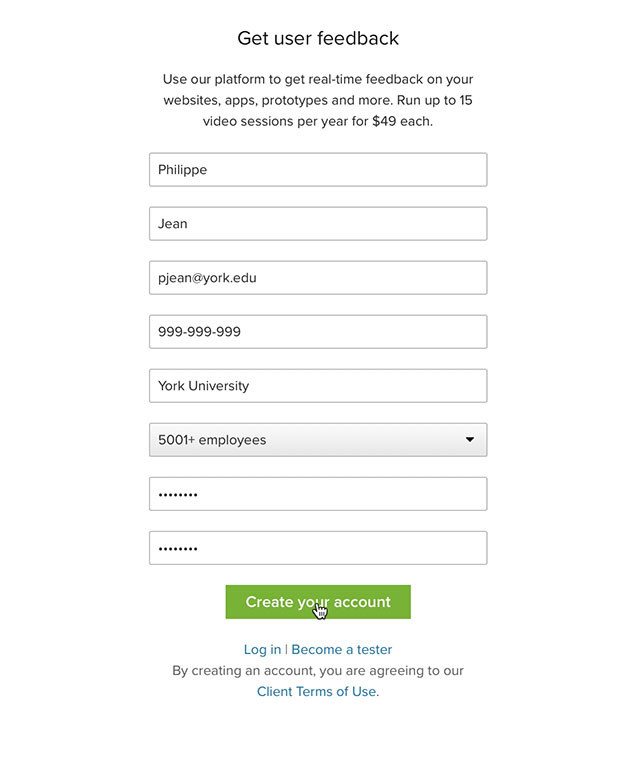

Project 3
Mobile Application
For the last project of the semester, students will strategize, conceptualize and design an interactive mobile application that “solves” an issue they have identified.
Students should be aware of the evaluation grid for this project.
Students can choose to work with their proposed theme of Project 2, or with a new subject of their choice. No matter which option they choose, students need to get the selected theme approved by their instructor.
Additionally, students need to be aware of the complexity of the design process of a mobile application. As such, some questions need to be asked and answered by each student at the beginning of their design process to ensure that they are developing their app strategically.
These questions include, but are not limited to:
- What is the exact issue I want to solve/improve upon?;
- What will be the specific focus of the mobile application?;
- Which of its users need will the mobile application fulfill, and how will it do so?;
For this project, students are invited to think beyond the screen and to consider what the mobile device itself offers to users and potential customers.
Here are some examples of characteristics specific to mobile devices that need to be taken into consideration:
- Notifications;
- Geo localization;
- Tracking data system;
- Communication aspect (text and voice components);
- Payment system.
Keep in mind that there needs to be a strong rationale behind the development of your mobile application. As such, if most of the identified issues/needs could potentially be solved/fulfilled by the creation of a typical website using a framework such as bootstrap, you need to articulate new questions/issues that require the creation of a mobile application.
The choice of mobile device used should be based on the specific requirements of each student’s project. From a design perspective, students should look at all devices offered in InVision and choose the best one based on its characteristics.
Strategy
The process required for this project is similar to the one used for designing websites. However, since this project doesn't involve HTML or CSS coding, students are invited to get into more details at each step of the design process (objective, user experience research, interaction design, user testing and visual design).
Here is a list of questions and items to consider when designing your mobile application:
- What does the user workflow look like? (how do users login to the app? Do they need to create an account?);
- What are the vital functions for this standalone experience?;
- What kind of content is required to support these functions? (Attention, smaller screen sizes require that extra attention is placed on text. Edit/cut down unnecessary content and display what is most important first);
- What technologies could assist users with their mobile experience? (e.g. location aware services);
- Consider the context of use – distractions, multitasking, motion, lighting conditions and poor connectivity to name a few;
- You should also take into account the users’ mindset when using mobile devices: are they micro tasking (using their mobile device for a short burst of activity), or are they bored (using their mobile device for entertainment/passing time);
- What are the users frustration and pain points? Determine these through your persona development exercise. For example, do users need to sign in to the app every time they want to use it, or only when they want to make a transaction? Another example that might lead to users' frustration is poor navigation and illogical positioning of links, options and irrelevant content;
- How will the navigation work? Reduce the number of categories and levels of navigation. Rearrange based on priority, always presenting the most important categories first;
- Make sure to use clear, concise and consistent labels for navigation across the app;
- Don't forget about the reality of touch screens: make sure the width and/or height of the different navigation items are at least 30 pixels (as an example) to ensure usability.
InVision Setup Account
- Go to the Education InVision Sign Up;
- Make sure to select the Student;
- Make sure to add York University for Institution;
- The code is: 56-73-13-19;
- This process is for new accounts.;
- If you already have an account, email Nadav Reis at nadav@invisionapp.com and he will make sure you get the latest upgrade.
Usertesting.com
For their last project of the semester, students will follow a usability testing methodology for the design of a Mobile Application.
More specifically, students will be using usertesting.com, a User Experience Research Platform, to get both quantitative data and qualitative insight on the usability of their prototype.
For this purpose, students will develop questionnaires involving a series of user interactions meant to validate certain assumptions they may have on the quality of the user experience of their project.
The results of the analysis of these questionnaires will be hypotheses related to the efficiency of different levels of their user interface, such as: the main navigation is difficult to understand; readability is an issue on some screens due to the smaller font size; the general workflow of the prototype is confusing; or participants are not able to access specific content due to a faulty navigation.
As such, the questionnaires will allow students to pinpoint problematic, or successful, areas of their user interface, which will, in turn, inform further development of their project.
Usertesting.com Setup Account

Please follow the instructions carefully
- Go to the usertesting.com;
- Go to Sign Up;
- Select ORDER NOW under Individual;
- Enter your first and last name;
- Select the email address already available under your name from this document. It’s important to use this address specifically. If not, you won’t be able to get the feature;
- Enter 999-999-999 for the phone number;
- Enter York University;
- Select 50001+;
- Create a password (and make sure that you take note of it somewhere);
- Click create your account.
Questions Strategy
Usertesting.com suggests two kinds of activities to perform, namely tasks and questions.
1 - Blank Task
A task should be an action or activity that you want a user to accomplish at that time. - Source usertesting.com
Tasks are specific actions that you want participants to execute on your prototype. They are a great way to gather actionable feedback from your participants. Make sure to focus the tasks on the insights you want to gather.
Example
Starting on the home page, please select the first image of the gallery section.
Goal
To understand if my main navigation is clear. Is my labeling good and understandable for users?
2 - Questions
Use a question when you want to elicit some form of feedback from a user in their own words. - Source usertesting.com
2.1 - Verbal response
Example
Describe what you enjoyed the most and what frustrated you the most about this prototype, and why?
Goal
Produces qualitative feedback
2.2 - Multiple choice
Example
In the activities section, what is the first piece of information that you read / view? A)Schedule, B)Filters, C)Price
Goal
Validate specific details such as hierarchy and information architecture.
2.3 - Rating scale
Example
How much do you appreciate the general colour scheme, font choice and visual icons? Rate from “Not at all likely” to “Very likely”
Goal
Good for collecting varied feedback.
2.4 - Written response
Example
In section XX, what do you think is missing, if anything?
Goal
Excellent open feedback for further analysis and to ultimately open the door for new ideas and opportunities, for example to improve or add small details, or to develop a completely new section.
Inform Consent Form
All students who engage with human participants for this course-related need to have an ethics review supervision done by each instructor.
Especially, for this project, students need to:
- Get approval of all questions submitted by their instructor;
- Adapt the Informed Consent Form Template for the screener question on your online usability test.
View / Download
Deliverables
Week 11 Nov 16
- 2 High And Robust Contrast Mood Boards;
- First Iteration of High Fidelity Mockups Mockups;
- First InVision prototype (could be done with Mid Fidelity wireframes);
- Usertesting.com - Setup Account;
- Usertesting.com - Create a questionnaire first draft for validation/approval of your instructor. Bring a paper copy for instructors signature. Submission to participants will start next week. Do not submit any tests before the agreement of the instructors first;
- Usertesting.com - Custom the Consent Form PDF for your project purpose;
- Usertesting.com - Watch Tutorial Demo;
- Usertesting.com - Read The Guide To User Testing Websites, Apps, And Prototypes;
Week 10 Nov 9
- Proposal - Page 1 - Written Component (Focusing on what, why, and how max 350 words);
- Proposal - Page 2 - Application Architecture (inspired by the site map technique);
- Proposal - Page 3 - Persona definition;
- Wireframes - Papers Low Fidelity & Vectors Mid fidelity;
- InVision - The Classroom tutorial;
- InVision - Learn Tutorials (need to be sign in);